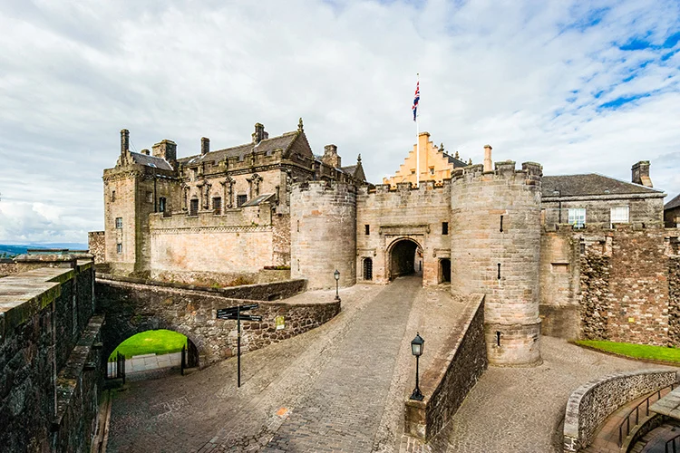
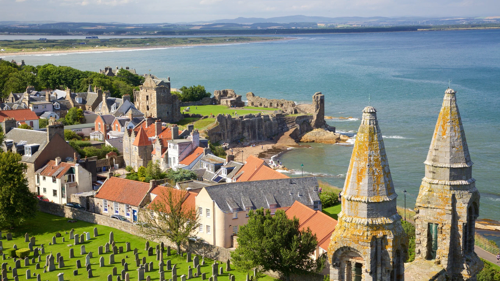

Explore Nearby
Edinburgh is a great base for short trips and day tours. Below are a few popular places visitors often add to their itineraries. These are close enough for a day trip and offer a variety of history, scenery, and coastal charm.
Stirling
Stirling is famous for its castle and the Wallace Monument. It played a key role in Scotland’s history and offers excellent views and well-preserved historic sites. A typical visit includes the castle tour and a walk up to the monument.
Distance from Edinburgh: ~1 hour by car / ~1 hour by train
St Andrews
St Andrews is a charming coastal town known for its university, ruined cathedral, and world-famous golf courses. It’s a pleasant mix of history, sea air, and relaxed town life.
Distance from Edinburgh: ~1 hour 15 minutes by car / ~1.5 hours by bus
Glencoe & The Highlands

The Highlands offer dramatic scenery and rugged landscapes. Glencoe is one of the most photographed spots in Scotland — ideal if you want mountains, lochs, and dramatic drives. Consider this for a longer day trip or overnight stay.
Distance from Edinburgh: ~2.5 to 3 hours by car (longer by public transport)
Explore More of Scotland
Here are a few videos that highlight popular destinations outside of Edinburgh.
Take in breathtaking aerial views of Stirling Castle and its historic surroundings.
Discover the charm of St Andrews Harbour from above, with its scenic coastline and townscape.
Experience the dramatic landscapes of Glencoe Valley in sweeping drone footage.
Planning a Longer Trip?
If you want a comprehensive overview of Scotland — routes, tips, and must-see places — download the full guide.
Download: Scotland Travel Guide